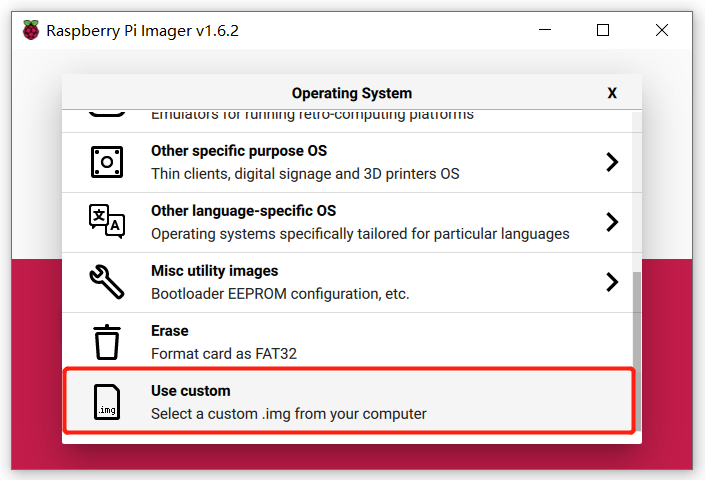
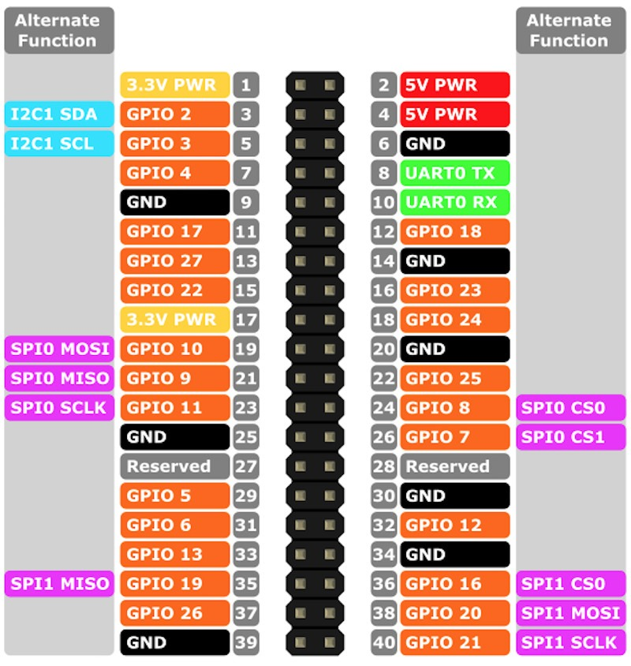

Create a file named "wpa_supplicant.conf" under ./boot with the following content.
ctrl_interface=DIR=/var/run/wpa_supplicant GROUP=netdev
network={
ssid="WIFI Name"
psk="WIFI Password"
}
Create an empty file named "ssh" under ./boot.
Find the IP address of the Raspberry Pi and connect it through PuTTY. The default account name and password should be "pi" and "raspberry"
Install VNCServer on Pi
sudo apt-get install tightvncserver
Install VNCServer on PC
Access Pi through VNC
Edit /etc/fstab.
sudo nano /etc/fstab
Add following scripts:
tmpfs /tmp tmpfs defaults,noatime,nosuid,size=100m 0 0
tmpfs /var/tmp tmpfs defaults,noatime,nosuid,size=30m 0 0
tmpfs /var/log tmpfs defaults,noatime,nosuid,mode=0755,size=100m 0 0
tmpfs /var/run tmpfs defaults,noatime,nosuid,mode=0755,size=2m 0 0
Monitor the core temperature
/opt/vc/bin/vcgencmd measure_temp
GeeekPi Raspberry Pi 4 Aluminum Heatsink with PWM Controllable Fan
sudo raspi-config → 4 Performance Options → P4 Fan → 14 → input temperature
Set up I2C
sudo apt-get install -y python-smbus
sudo apt-get install -y i2c-tools
sudo raspi-config
Interfacing Options → enable I2C → reboot the Raspberry Pi
Install Adafruit-SSD1306
sudo python -m pip install --upgrade pip setuptools wheel
sudo apt-get remove python-pip python3-pip
sudo apt-get install python-pip python3-pip
sudo apt-get install python-pil python3-pil
sudo pip install Adafruit-SSD1306
cd ~
git clone https://github.com/adafruit/Adafruit_Python_SSD1306.git
cd ~/Adafruit_Python_SSD1306/examples/
Connect Screen
Screen GND - Raspberry Pi GND
Screen VCC - Raspberry Pi 3V3
Screen SDA - Raspberry Pi SDA
Screen SCL - Raspberry Pi SCL
sudo i2cdetect -y 1
# sudo i2cdetect -y 0

Edit
cd ~
sudo cp ~/Adafruit_Python_SSD1306/examples/stats.py ~/
sudo nano stats.py # choose suitable settings
sudo python stats.py
Get Temperature
def get_cpu_temp():
tempfile = open('/sys/class/thermal/thermal_zone0/temp')
cpu_temp = tempfile.read()
tempfile.close()
return float(cpu_temp)
Add scripts into "./etc/rc.local" before "exit 0".
sudo mount -o remount, rw /
sudo fdisk -l
sudo mkdir /mnt/udisk
sudo mount -o uid=pi,gid=pi /dev/sda1 /mnt/udisk/